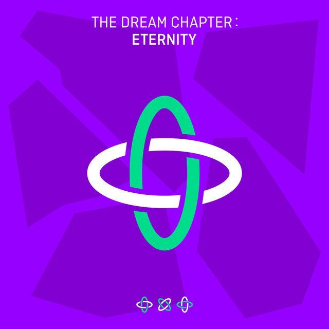
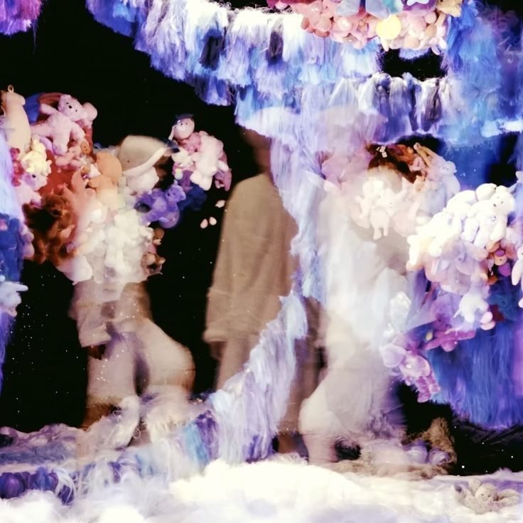
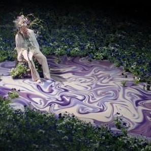

Album ini keluar tahun 2020, di masa COVID. Fairy of Shampoo is my favorite song in dis album (ini mereka cuma remake sih).
Drama

Can't You See Me?

Fairy of Shampoo
Maze in the Mirror

Eternally
PUMA